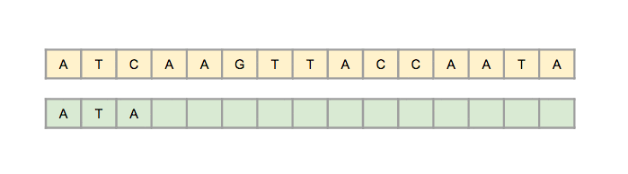

Boyer Moore Algorithm
Boyer Moore algorithm starts matching from the last character of the pattern. It preporcesses the pattern and creates different arrays for both heuristics. At every step, it slides the pattern by max of the slides suggested by the two heuristics. So it uses best of the two heuristics at every step.
Boyer Moore is a combination of following two approaches.
1) Bad Character Heuristic
2) Good Suffix Heuristic
An efficient string matching algorithm that is the standard benchmark for practical string-search literature is the Boyer-Moore algorithm. The algorithm is mainly used in computer science. In general, it runs faster if the pattern is longer - a feature that is extremely rare in the field of algorithms. The reason for that is that the algorithm seems to match on the tail of the pattern rather than the head, and to skip along the text in jumps of multiple characters rather than searching every single character in the text.
A significantly faster string searching method is to scan the pattern from right to left when trying to match it against the text. This can be easily seen on the example, where P = BAABBAA, assuming there are matches on the sixth and seventh character, but not on the fifth. Notice that the pattern can be immediately slided seven positions to the right and can move on checking the fourteenth character in the text. This can be done because the partial match XAA, where X is not equal to B, does not appear elsewhere in the pattern. The pattern could appear somewhere in the text later, so there is a need to remember the position to restart the searching method if there is a need.
Another example of Boyer-Moore shifting and searching, is shown in Figure 1 where the text (or often called ”haystack”) is T = F INDINAHAY ST ACKNEEDLE and the ”needle” (or the pattern) is P = NEEDLE.
The comparison starts from the rightmost character E and it is compared with character N on the fifth position in the text. Since N appears in the pattern, the pattern is slided five positions to the right to line up the N in the text with the rightmost N in the pattern. The next comparison is made with the rightmost E in the pattern with the character S on the tenth position in the text. The difference with the mismatched S is because S does not appear in the pattern so the pattern is slided six positions to the right. The rightmost E in the pattern is matched with the character on position 16, where a mismatch exists. N at position 15 is discovered and the pattern is slid four positions. Finally, moving from right to left in the text at position 20, the searched pattern is discovered within the text. The algorithm uses only four comparisons to find the suitable pattern, which is much better than with the naive algorithm

Figure 1: Simple example for Boyer-Moore algorithm
One of the main reasons for the popularity of the Boyer-Moore algorithm is in its preprocessing. The algorithm is suitable for applications when the pattern is much shorter than the text. The condition is basically fulfilled in almost every searching case, which is why the algorithm often is so used in practice and theory.
There are two variants to perform shifting and preprocessing based on rules called: the Bad Character Rule (BCR) and the Good Suffix Rule (GSR).
Each rule has its own advantages and disadvantages, so their names ”good” and ”bad”, do not mean that the one is actually better than the other.
The Bad Character Rule (BCR)
Definition :
This rule reviews the character in the text T where comparison failed. When the next occurrence of the character to the left is found in the pattern P, then a shift that brings that occurrence in line with the mismatched occurrence in T is proposed. If the mismatched character does not occur to the left in P, a new shift is proposed that moves entire P past the point of mismatch.

Figure 2: Example of BCR, where b is a mismatched character. Skip alignments until (a) b matches its opposite in P or (b) P moves past b.
To estimate BCR’s time complexity, we can use a 2D array where the first dimension is indexed by the index of the character c in the alphabet, and the second dimension is indexed by the index i from the pattern. BCR will return the occurrence c of P with the index j < i (or -1 if there is a mismatch). The time complexity of BCR is thus O(1), a constant, which is in practice the best amount the searching algorithms can have. The space complexity of BCR is O(k*n), where k is the size (the number of characters) of the alphabet.
The Good Suffix Rule (GSR)
This rule is the advantage of the Boyer-Moore algorithm, searching from right to left.
Definition :
Suppose that for a given alignment of P and T, a substring t of T matches a suffix of P, but a mismatch occurs at the next comparison to the left. Then find, if it exists, the rightmost copy t’ of t in P such that t’ is not a suffix of P and the character to the left of t’ in P differs from the character to the left of t in P. Shift P to the right so that substring t’ in P aligns with substring t in T. If t’ does not exist, then shift the left end of P past the left end of t in T by the least amount so that a prefix of the shifted pattern matches a suffix of t in T. If no such shift is possible, then shift P by x (x is the length of the suffix) places to the right. If an occurrence of P is found, then shift P by the least amount so that a proper prefix of the shifted P matches a suffix of the occurrence of P in T. If no such shift is possible, then shift P by x places, that is, shift P past t.

Figure 3: Example for GSR, where t is a substring of T and matches a suffix of P. Skip alignments until t matches the opposite character in P (a), a prefix of P matches a suffix of t (b) or P moves past the first matching substring t(c).
To determine GSR’s time complexity of the processing, we need two arrays: L for the general case, and H for either when the general returns a meaningless result or a match occurs. It is known that for each i in L, the index i is the largest position less than n and it is proven that the pattern P[i, ..., n] matches a suffix P[1, ..., L[i]] and it is not equal to P[i − 1]. If this condition is not satisfied, current index in the array is equal to zero. The index in H is determined as the length of the largest suffix in P, which is at the same time a prefix of P.
All of this leads to a linear time and space complexity, O(n), where n is the length of the text.
The pseudocode of the algorithm contains two functions in addition to the main one: the function for computing the good suffix and the function for computing the last occurrence. The input consists of the substring/pattern, the text, and an alphabet Σ. Here is the pseudocode.
Pseudocode :
BOYER-MOORE ALGORITHM(P,T,Sigma) m = length(P) n = length(T) lambda = compute last occurrence(P,m,Sigma) gamma = compute good suffix(P,m) s = 0 while s <= n-m do j = m while j>0 and P[j] = T[s+j] do j = j-1 if j = 0 then print "The pattern occurs at shift" s s = s + gamma[0] else s = s + max(gamma[j],lambda[T[s+j]]) COMPUTE LAST OCCURRENCE(P,m,Sigma) for each a in Sigma do lambda[a] = 0 for j = 1 to m do lambda[P[j]] = j return COMPUTE GOOD SUFFIX(P,m) pi = compute prefix function(P) P’ = reverse(P) pi’ = compute prefix function(P’) for j = 0 to m do gamma[j] = m- pi[m] for l = 1 to m do j = m - pi’[l] if gamma[j] > l - pi’[l] then gamma[j] = l - pi’[l] return
Video Demonstration :
Complexity :
To sum up, the algorithm’s time complexity is O(n+m), if and only if the pattern does not appear in the text. However, this is not the best case scenario, because the main aim of this algorithm is to find an existing substring in the text. The worst case time complexity when the substring does appear in the text is O(n*m). Although this is the same time complexity as the time complexity of the naive algorithm, Boyer-Moore algorithm is in practice better due to its searching from tail to head, preprocessing, omitting unnecessary comparisons, etc.